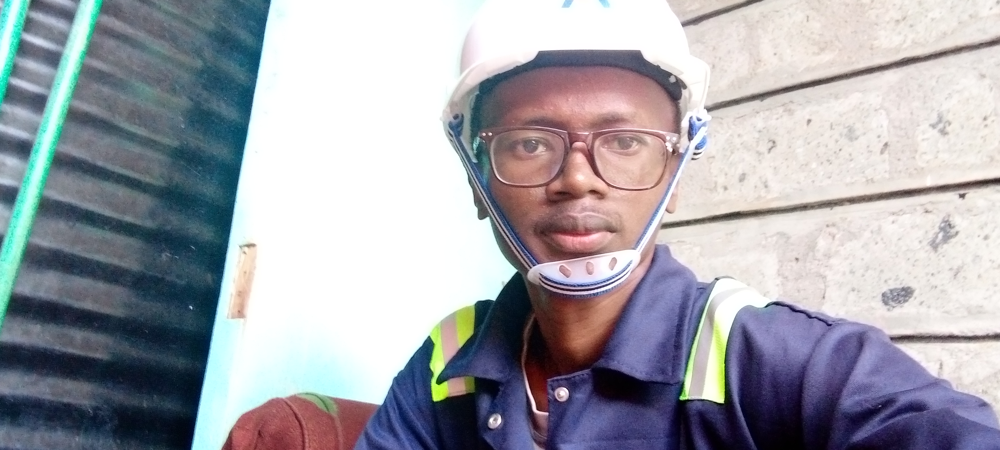

COMPUTER
Computer refer to an electronic device that contains stored programs which help a user to accomplish specific tasks

A computer needs electricity in order to run,this is because the basic operation of a computer is through binary .Binary refers to two ,thus digital electronics is the use of two states i.e ON and OFF to store data. An off state is represented as a 0 and an on state is represented as a 1.All this depends on the state of billions of transistors.
A transistor it consists of two PN -junctions producing three connecting terminals with each terminal being given a name to identify it from the other two.These three are the Emitter, the Base , the Collector . The bjt uses both electron and hole charge carriers.The current flowing to the base controls the current at the collector thru the relation beta = Ic/Ib.Different arrangements of the transistors results to diffrent logic gates such as AND gate OR gate NAND gate NOR gate XNOR gate etc.
GENERATIONS OF COMPUTERS
The development of computer has undergone different stages and this has led to different generations of computers from first to the modern computers
First generation computers
The first computers were developed between year 1940-1950.They were computers that used vaccum tubes for logic circuitry .The main characteristics were:
- Main electronic component was vacuum tubes
- Main memory was based on magnetic drums and magnetic tapes
- The programming language was the machine language
- It consumed a lot of power and generate a lot of heat
- They were very slow and very large in size
- The input output devices were punched cards and paper tape
Second generation computers
The second computers were developed between year 1950-1960.They were computers that used transistors for logic circuitry .The main characteristics were:
- Main electronic component was transistor
- Main memory was based on magnetic cores and magnetic tapes
- The programming language was the assembly language
- It consumed a low power and generate a less heat
- They had improved speed ,reliability and were smaller in size
- The input output devices were punched cards and paper tape
Third generation computers
They were developed between year 1960s-1970s.They were computers that used integrated circuits for logic circuitry .The main characteristics were:
- Main electronic component was ICs
- Main memory was based on large magnetic cores and magnetic tapes
- The programming language was high level language such as FORTRAN
- They were smaller cheaper and more efficient than 2nd generation
- They had improved speed and reliabiity
- The input output devices were punched cards and paper tape
Fourth generation computers
They were developed in the year 1970s to present day.They were computers that used very large scale integration and microprocessor for logic circuitry .The main characteristics were:
- Main electronic component was large scale integration and microprocessor
- Main memory was based on semiconductor such as ram and rom
- The programming language was high level language such as Python ,Java ,Kotlin
- High speed and reliability compared to the third generation computers
- They are smaller cheaper and more efficient than the previous generations
- The input/output devices include keyboard,pointing devices,scanners,monitor
- They use networking
Fifth generation computers
These are present and future computers.They use ultra large scale integration technology for logic circuitry .The main characteristics were:
- Main electronic component is based on artificial inteligence,parralel processing and ultra large scale integration technology
- They understand human language
- They consume very little power and generate a less amount of heat
- They have remarkable speed and accuracy and reliability
- The input/output devices are keyboard,touchscreen,monitor,mouse,pen,speech ,lightscanner etc

| Latest | Author | Customer Care |
| RAM | PIXELS | PROCESSING SPEED |
| Li-ion Battery | BATTERY capacity | RESOLUTION |
| PNG | JPEG | GIF |